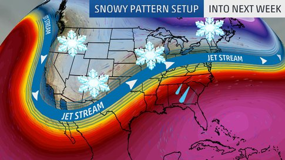

Active Pattern Will Bring Chances for More Snow Into Next Week
By Linda Lam · weather.com
Multiple chances for snow are ahead for parts of the West, Plains, Midwest and Northeast as an active weather pattern will be in place for at least the next week. The jet stream pattern will feature a southward dip over the West which will allow systems to track through the West and into the Plains, Midwest and off the East Coast. Areas south of this track will see rain, while farther north snow will fall.